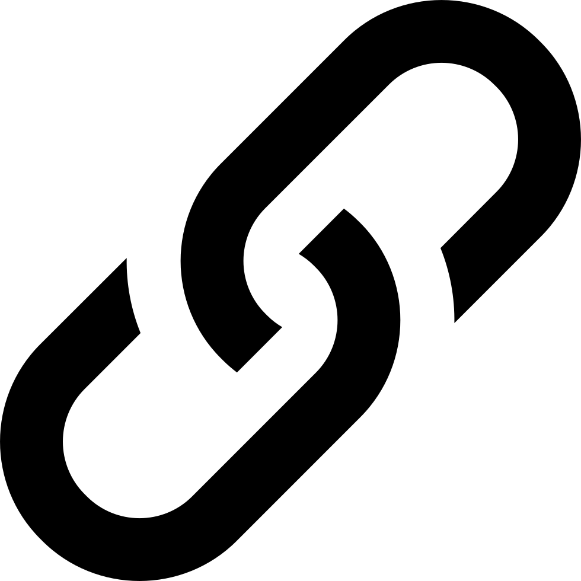

Unidad 7
Semana 11: Visualización y Análisis de Redes (Teoría de Grafos)
 https://eduard-martinez.github.io
1 ¿Qué es una red?
En Business Analytics, una red (o grafo) es una representación matemática de las relaciones entre entidades:
- Cada nodo (vértice) representa un agente: persona, empresa, producto, ciudad, etc.
- Cada arista (enlace) representa una relación o interacción entre ellos: amistad, transacción, flujo de información, etc.
Las redes permiten analizar fenómenos donde la interdependencia entre unidades es clave:
- Comunicación dentro de una organización.
- Recomendaciones de productos.
- Flujos comerciales entre países.
- Colaboraciones científicas o empresariales.
Idea clave: Una red combina estructura (nodos y enlaces) y comportamiento (intensidad, dirección, frecuencia).
1.1 Tipos de grafos
Los grafos se clasifican según la naturaleza de las relaciones que representan.
1.1.1 Grafo no dirigido
Las conexiones son bidireccionales: si A está conectado con B, entonces B también lo está con A.
📘 Ejemplo: amistad, coautoría, colaboración.
Matemáticamente: \[A_{ij} = A_{ji}\] donde \(A_{ij}\) indica la existencia de un vínculo entre los nodos i y j.
1.1.2 Grafo dirigido (dígrafo)
Las conexiones tienen dirección, lo que permite identificar flujos o jerarquías.
📘 Ejemplo: seguidores en redes sociales, flujo de información, pagos entre empresas.
\[A_{ij} \neq A_{ji}\]
Un enlace de i a j no implica necesariamente que exista el de j a i.
1.1.3 Grafo ponderado
Cada arista tiene un peso o intensidad que mide la fuerza, frecuencia o costo de la relación.
📘 Ejemplo: número de transacciones, horas de comunicación, volumen comercial.
El grafo se define como: \[G = (V, E, W)\] donde \(W\) es el conjunto de pesos asociados a las aristas.
1.2 Representación de una red
Existen tres formas comunes de representar una red:
Lista de aristas (edge list): Cada fila indica una conexión entre dos nodos:
from to weight Ana Beto 3 Ana Carla 1Matriz de adyacencia: Matriz cuadrada \(A\) donde \(A_{ij} = 1\) si i está conectado con j, y 0 si no.
Matriz de incidencia: Representa qué aristas inciden en qué nodos, útil para cálculos estructurales.
1.3 Métricas de análisis de redes
El objetivo del análisis de redes es cuantificar la posición e importancia de los nodos dentro de la estructura global.
1.3.1 Métricas locales
Miden la influencia inmediata de un nodo dentro de su entorno cercano.
Grado de centralidad (Degree): Número de conexiones directas que tiene un nodo. \[C_D(i) = \sum_j A_{ij}\] Cuanto mayor el grado, mayor la capacidad de interacción directa.
Centralidad de intermediación (Betweenness): Mide cuántas veces un nodo actúa como puente en los caminos más cortos entre otros nodos. \[C_B(i) = \sum_{s \neq i \neq t} \frac{\sigma_{st}(i)}{\sigma_{st}}\] donde \(\sigma_{st}(i)\) es el número de caminos mínimos entre s y t que pasan por i.
1.3.2 Métricas globales
Evalúan la posición de un nodo respecto a toda la red.
Centralidad de cercanía (Closeness): Indica qué tan rápido puede un nodo llegar a todos los demás. \[C_C(i) = \frac{1}{\sum_j d(i,j)}\] donde \(d(i,j)\) es la distancia más corta entre i y j.
Centralidad de eigenvector: Considera no solo el número de conexiones, sino la importancia de los nodos conectados. \[C_E(i) = \frac{1}{\lambda} \sum_j A_{ij} C_E(j)\] donde \(\lambda\) es el mayor valor propio de la matriz de adyacencia.
1.4 Propiedades estructurales de la red
- Distancia promedio: número medio de pasos que separa a dos nodos cualesquiera.
- Excentricidad: distancia máxima de un nodo a cualquier otro.
- Diámetro: máxima excentricidad de la red (longitud del camino más largo entre dos nodos).
- Densidad: proporción de conexiones existentes sobre el total posible.
\[D = \frac{2E}{N(N-1)}\] donde \(E\) es el número de aristas y \(N\) el número de nodos.
1.5 Comunidades y modularidad
Las comunidades son subconjuntos de nodos más densamente conectados entre sí que con el resto de la red.
- En
igraph, pueden detectarse con algoritmos como:cluster_louvain()(para grafos ponderados)cluster_walktrap()cluster_fast_greedy()
- La modularidad (Q) mide qué tan bien separadas están esas comunidades: \[Q = \frac{1}{2m}\sum_{ij}\left[A_{ij} - \frac{k_i k_j}{2m}\right]\delta(c_i, c_j)\] donde \(c_i\) es la comunidad del nodo i.
1.6 Aplicaciones en Business Analytics
- Redes sociales corporativas: identificar líderes informales o cuellos de botella en la comunicación.
- Marketing: descubrir influenciadores clave.
- Logística: optimizar rutas o flujos de transporte.
- Finanzas: mapear interdependencias entre bancos o cooperativas.
- Open Finance: analizar relaciones entre clientes y productos financieros.
Resumen: El análisis de redes permite traducir interacciones en conocimiento estructural, identificando quién influye, cómo fluye la información y dónde se forman comunidades dentro de un sistema.
2 Aplicación en R
Para ilustrar el análisis de redes, construiremos un ejemplo con la red de pases de los jugadores de la Selección Colombia durante un partido. Cada nodo representa a un jugador, y cada arista dirigida indica un pase de un jugador a otro. El peso de la arista refleja la cantidad de veces que ese pase se repitió a lo largo del partido.
A partir de esta red podemos responder preguntas como:
• ¿Qué jugadores son los más influyentes en la circulación del balón?
• ¿Existen jugadores que actúan como puentes entre líneas (defensa, medio y ataque)?
• ¿Qué tan conectada es la red del equipo?Este ejercicio nos permitirá visualizar cómo los patrones de interacción dentro del equipo pueden analizarse con las mismas herramientas que usamos para estudiar redes sociales, empresariales o financieras. En esencia, un equipo de fútbol es también un sistema de relaciones, donde la posición en la red revela liderazgo, dependencia y eficiencia colectiva.
Cómo usar este material: Puedes ejecutar los chunks de R directamente en el navegador gracias a webR (según tu _quarto.yml), sin instalar nada localmente.
2.1 Preparación del entorno
El propósito de este bloque es asegurar un entorno limpio y reproducible. Primero, eliminamos objetos previos que puedan interferir con el análisis. Después, cargamos los paquetes necesarios para manipulación de datos, visualización, generación de resúmenes y ejecución de K-means. Con esto, dejamos el entorno preparado para comenzar.
2.2 Ingesta de datos (carga desde archivo o URL)
En esta sección realizamos la ingesta de datos, es decir, el proceso de cargar la base que utilizaremos para construir la red de pases de la Selección Colombia. Cada fila de la base representa un pase realizado entre dos jugadores durante un partido, con información sobre quién hizo el pase, a quién se dirigió y cuántas veces se repitió esa acción.
Esta estructura de datos nos permitirá representar el flujo del balón como un grafo dirigido y ponderado, donde:
• Los nodos son los jugadores.
• Las aristas son los pases.
• El peso de la arista indica la frecuencia del pase.2.3 Tipos de grafos
Este tipo de red solo representa la existencia de conexión entre dos jugadores, sin importar quién inició el pase ni cuántas veces ocurrió. Se usa cuando el interés es identificar si existe relación, no su dirección ni su intensidad.
Aquí se incorpora la dirección del pase, lo cual es crucial en contextos dinámicos como el fútbol. Cada flecha representa quién pasa y quién recibe el balón.
Incorporamos ahora la intensidad del pase (peso), pero tratamos la red como bidireccional: si dos jugadores se pasan el balón mutuamente, la arista representa la suma de sus interacciones.
Finalmente, representamos la red completa: cada arista tiene una dirección (quién pasa a quién) y un peso (frecuencia del pase). Este es el tipo de grafo más informativo para analizar patrones de juego y centralidad.
2.4 Indicadores de centralidad
El grafo por sí solo nos permite visualizar la estructura general del equipo, pero no siempre es suficiente para analizar la influencia de cada jugador. En la práctica, las redes pueden ser densas y confusas — las líneas se sobreponen y es difícil identificar quién tiene un rol central o de conexión.
Para eso, usamos los indicadores de centralidad, que cuantifican la importancia de cada nodo (jugador) dentro de la red según diferentes criterios. Estas métricas pueden dividirse en tres grupos: medidas locales, medidas globales y medidas agregadas de red.
2.4.1 Medidas locales
Evalúan la posición de un nodo respecto a su entorno más inmediato, es decir, cuántos vínculos tiene o qué tan importante es como intermediario en los flujos de interacción.
2.4.1.1 Grado de Centralidad (Degree Centrality)
Mide el número de conexiones directas de cada jugador. En el contexto futbolístico, un jugador con alto grado de centralidad es aquel que participa en muchas jugadas de pase.
Interpretación: Los jugadores con valores más altos son los que tienen mayor participación directa en la circulación del balón (por ejemplo, mediocampistas que conectan líneas o defensas que inician las jugadas).
2.4.1.2 Intermediación (Betweenness Centrality)
Mide cuántas veces un nodo actúa como puente entre otros dos jugadores. Un jugador con alta intermediación es esencial para mantener la cohesión del equipo: si se elimina, la red puede fragmentarse.
Interpretación: Valores altos indican jugadores que canalizan el juego entre distintas zonas del campo (por ejemplo, James o Muñoz como conectores entre defensa y ataque).
2.4.2 Medidas globales
Evalúan la posición de un jugador respecto a toda la red, considerando distancias, flujos y relevancia relativa dentro del equipo.
2.4.2.1 Cercanía (Closeness Centrality)
Mide qué tan rápido un jugador puede alcanzar al resto de sus compañeros (en promedio). Cuanto mayor la cercanía, más eficiente es su acceso al resto de la red.
Interpretación: Los jugadores con alta cercanía son aquellos que reciben y distribuyen el balón con pocos intermediarios, facilitando la fluidez del juego.
2.4.3 Otras medidas complementarias
Existen también métricas que no pertenecen estrictamente a las categorías anteriores, pero ayudan a describir la estructura general de la red.
2.4.3.1 Distancia promedio (Mean Distance)
Mide el número medio de pasos necesarios para conectar dos jugadores cualesquiera. Cuanto menor sea la distancia, más compacto y eficiente es el equipo.
2.4.3.2 Excentricidad (Eccentricity)
Mide la distancia máxima desde un jugador al más lejano en la red.
Interpretación: Jugadores con alta excentricidad están periféricos en el juego; los de baja excentricidad son centrales o muy conectados.
2.4.4 Medidas agregadas de la red
Estas métricas resumen propiedades estructurales globales: cohesión, conectividad y redundancia.
2.4.4.1 Diámetro (Diameter)
Mide la máxima excentricidad, es decir, la ruta más larga que conecta dos jugadores.
2.4.4.2 Densidad (Density)
Es la proporción de conexiones efectivas sobre todas las posibles. Indica qué tan interconectado está el equipo.
Interpretación: Una alta densidad indica un equipo cohesionado, donde la mayoría de los jugadores interactúan entre sí.
2.4.5 Transitividad (Transitivity)
Mide la proporción de triángulos completos en la red, es decir, cuántos grupos de tres jugadores están totalmente conectados.
Interpretación: Alta transitividad sugiere jugadas triangulares frecuentes (asociaciones cortas y cooperación local).
2.4.5.1 Reciprocidad (Reciprocity)
Indica la probabilidad de que si un jugador A le pasa a B, B también le devuelva el pase.
Interpretación: La reciprocidad mide la mutualidad de las interacciones, es decir, qué tanto los pases van en ambas direcciones (colaboración bidireccional).
3 Actividad en Clase: Red de Mensajes de WhatsApp
3.1 Objetivo
Aplicar los conceptos de análisis de redes vistos en clase para identificar los contactos más influyentes, los intermediarios y la estructura general de comunicación dentro de un grupo de mensajes de WhatsApp simulado.
3.2 Instrucciones
- Copia y ejecuta los chunks de código en R (o directamente en tu entorno webR si está habilitado). Esto generará una base de datos con los mensajes enviados entre un grupo de contactos y construirá la matriz de adyacencia necesaria para el análisis.
- Analiza los resultados obtenidos paso a paso.
3. Guarda tu código y tus respuestas en un único archivo .qmd o .html.
4. Sube tu archivo final a la plataforma Intu antes del cierre de la sesión.3.3 Preguntas
1. Construcción del grafo:
• Crea un grafo dirigido y ponderado a partir de la base generada (mensajes).
• Asegúrate de que las aristas representen la dirección del mensaje y su frecuencia (peso).2. Indicadores de centralidad:
Calcula al menos tres indicadores de centralidad:
• Grado de centralidad (Degree)
• Intermediación (Betweenness)
• Cercanía (Closeness)3. Visualización de la red
Genera una visualización que muestre las relaciones entre los contactos usando:
• plot() (visualización básica), o
• ggraph() (visualización avanzada con control de color y tamaño).4. Entrega: Archivo .R con código.
Sube tu archivo a Intu con el nombre: Taller7_Apellido_Nombre.qmd